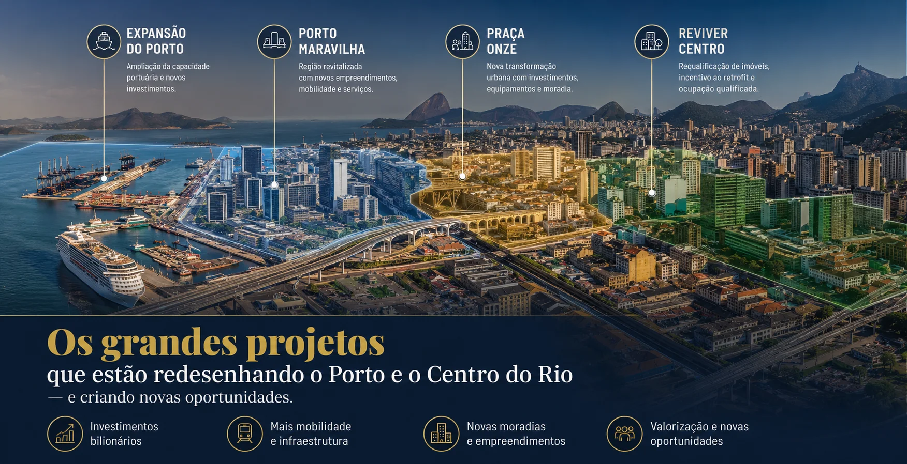

Obras de mobilidade na Zona Sudoeste
Rio TV Câmara • reportagem sobre o pacote de intervenções. O vídeo contextualiza o plano; os estágios são os documentados nos cartões acima.
Assistir no canal de origem ↗
Projetos públicos, mobilidade e qualidade de vida no Centro, Porto, Barra, Recreio, Jacarepaguá e no entorno metropolitano.
CENTRO E PORTO | BARRA E RECREIO | JACAREPAGUÁ | NITERÓI E SÃO GONÇALO
Conheça as regiões em imagens ↓Dez anos-calendário completos: 2016–2025. O histórico mede preços anunciados de apartamentos residenciais prontos. Não representa valores efetivamente negociados, casas, terrenos ou preços de lançamentos.
Azul: Rio de Janeiro. Verde: Niterói. Cada ponto corresponde a dezembro do ano indicado; passe o cursor para ver o valor.
| Ano | Rio • R$/m² | Rio • índice | Niterói • R$/m² | Niterói • índice | Fonte primária |
|---|---|---|---|---|---|
| 2016 | R$ 10.214 | -2.08% | R$ 7.434 | -1.76% | FipeZAP 2016 ↗ |
| 2017 | R$ 9.811 | -4.45% | R$ 7.225 | -3.43% | FipeZAP 2017 ↗ |
| 2018 | R$ 9.402 | -3.59% | R$ 7.005 | -4.06% | FipeZAP 2018 ↗ |
| 2019 | R$ 9.331 | -2.25% | R$ 6.786 | -1.94% | FipeZAP 2019 ↗ |
| 2020 | R$ 9.437 | +1.60% | R$ 6.800 | +0.52% | FipeZAP 2020 ↗ |
| 2021 | R$ 9.650 | +2.16% | R$ 6.718 | -0.36% | FipeZAP 2021 ↗ |
| 2022 | R$ 9.860 | +2.20% | R$ 6.755 | +0.61% | FipeZAP 2022 ↗ |
| 2023 | R$ 9.988 | +1.42% | R$ 6.937 | +2.89% | FipeZAP 2023 ↗ |
| 2024 | R$ 10.289 | +3.13% | R$ 7.132 | +2.78% | FipeZAP 2024 ↗ |
| 2025 | R$ 10.830 | +5.21% | R$ 7.643 | +7.18% | FipeZAP 2025 ↗ |
| Local | Cobertura confirmada neste levantamento | Como usar |
|---|---|---|
| Rio de Janeiro | Dez observações anuais e variações do índice, 2016–2025. | Referência municipal, não avaliação do imóvel. |
| Niterói | Dez observações anuais e variações do índice, 2016–2025. | Não equivale ao preço de Icaraí, Piratininga ou outro bairro. |
| Barra da Tijuca, Recreio, Jacarepaguá, Freguesia, Curicica, Barra Olímpica e Pechincha | Série comparável de dez anos por bairro não verificada nas fontes consultadas. | Não atribuímos a variação do Rio a esses bairros. Para avaliar, comparar anúncios e negócios equivalentes no endereço. |
| Centro, Praça Onze, Porto e São Cristóvão | Série comparável de dez anos por bairro não verificada. | Retrofits e lançamentos têm características e preços diferentes dos apartamentos prontos do índice. |
| São Gonçalo e demais cidades/bairros do catálogo | Sem série comparável de dez anos confirmada neste levantamento. | Não substituímos os dados ausentes pela média de Niterói ou do Rio. |
Estimativas matemáticas condicionais. As taxas de 2%, 4% e 6% ao ano são hipóteses ilustrativas, não previsões da Fipe nem probabilidades calculadas pela WAL. Obras públicas não foram convertidas em percentuais de valorização.
Azul: 2% a.a. • Verde: 4% a.a. • Laranja: 6% a.a. Pontos anuais; linhas tracejadas indicam simulação.
Preço nominal = preço inicial × (1 + taxa anual)anos. Poder de compra = preço nominal ÷ (1 + inflação hipotética)anos. Com inflação de 4%, o cenário de 2% perde poder de compra, o de 4% o mantém e o de 6% o aumenta. Não incluem aluguel, vacância, impostos, condomínio, manutenção, custos de compra/venda ou financiamento. Preços podem cair e trajetórias reais não serão linhas suaves.
| Abril de | 2% a.a. | 4% a.a. | 6% a.a. |
|---|
A comparação abaixo reúne mudanças documentadas no catálogo público deste painel. Os possíveis efeitos para moradia são uma leitura da WAL; não constituem estudo causal de valorização.
| Região / mudança | Evidência documentada | O que muda para o morador | O que verificar |
|---|---|---|---|
| Barra, Recreio e Barra Olímpica • intervenções viárias | Plano de mobilidade anunciado em janeiro/2026; primeira intervenção, uma rotatória, iniciada em março/2026. | A proposta busca reorganizar circulação e acessos. Benefício depende da entrega e do trajeto. | Obra específica, prazo atualizado e tempo de deslocamento nos horários de pico. |
| Complexo lagunar • transporte aquaviário | Contrato firmado em setembro/2025 prevê rede de terminais, píeres e linhas; cronograma condicionado às etapas de implantação. | Possível alternativa de deslocamento por água e conexão com outros modos. | Terminal realmente acessível, linhas em operação, tarifa e licenciamento. Rede contratada não significa rede entregue. |
| Barra Olímpica • legado de lazer | Parque Rita Lee entregue em maio/2024. | Espaço público de caminhada, esporte e lazer além das áreas privadas do condomínio. | Distância a pé, acesso, conservação e programação atual. |
| Centro e Praça Onze • transformação urbana | Programa apresentado em lei de julho/2026, com horizonte de implantação de vinte anos. | Propõe ampliar moradia e requalificar o entorno; pode mudar a combinação de usos e serviços. | Projetos aprovados, obras executadas e serviços existentes. Metas do programa não são unidades entregues. |
| Barra e leste metropolitano • metrô | Propostas e estudos estaduais apresentados em 2025 para expansão da Linha 4 e Linha 3. | Potencial de novas conexões se houver financiamento e implantação. | Não tratar estações propostas como disponíveis ao comprar. |
| Niterói • lazer e educação ambiental | Centro EcoCultural Sueli Pontes inaugurado em 2024 no Parque Orla Piratininga. | Integra paisagem, atividades culturais e ambientais ao cotidiano da Região Oceânica. | Efeito localizado; avaliar o acesso a partir do imóvel. |
Consultar as datas, estágios e fontes oficiais de cada projeto ↑
Para avaliar mudanças em plantas e serviços, compare memorial descritivo, projeto aprovado e custos. Esta é uma lista de avaliação da WAL, não uma afirmação de que todos os lançamentos já oferecem esses recursos.
| Característica | Possível utilidade | Comprovação necessária |
|---|---|---|
| Plantas compactas ou flexíveis | Uso eficiente do espaço e adaptação à rotina. | Área privativa, circulação, ventilação, acessibilidade e possibilidade legal de alterar a planta. |
| Coworking, lavanderia e áreas compartilhadas | Serviços próximos de casa. | Entrega contratada, regras de uso, capacidade e efeito no condomínio. |
| Uso misto e comércio no entorno | Mais atividades acessíveis a pé. | Comércio existente versus promessa; ruído, horários e segurança do percurso. |
| Eficiência de água e energia | Possível redução de consumo e conforto. | Especificação técnica, medição, desempenho e manutenção; não presumir economia garantida. |
| Bicicletários e conexão ao transporte | Mais opções para o deslocamento diário. | Rotas seguras e serviço em operação, distância real e integração tarifária. |
| Retrofit e adaptação de edifícios no Centro | Reuso de construções e proximidade de serviços. | Regularidade, instalações, estrutura, acessibilidade e despesas futuras. |
Explore as transformações públicas e entenda como elas podem influenciar mobilidade, lazer e sua escolha de imóvel.
Perfis orientativos da WAL a partir do levantamento recebido. Confira as condições no endereço exato do imóvel.
As imagens dos cartões distinguem fotografias e representações de projeto. Clique na fonte para consultar o material original.
Rio TV Câmara • reportagem sobre o pacote de intervenções. O vídeo contextualiza o plano; os estágios são os documentados nos cartões acima.
Assistir no canal de origem ↗Playlist da Rio TV Câmara com vídeos sobre história, cultura e vida nos bairros. Conteúdo de contexto urbano, sem comprovação de avanço de obras.
Abrir a série oficial ↗Se um vídeo não permitir reprodução incorporada, use o link para assistir na origem. Conteúdo e disponibilidade são controlados pelo publicador.
Compare trabalho, orçamento, deslocamento, serviços e horizonte de compra com a equipe WAL.
Explorar o mapa de imóveisPraias, parques, cultura e patrimônio: veja os lugares que ajudam a dar identidade a cada região e a imaginar sua rotina fora de casa.
13 imagens
Orla, paisagem e espaços de lazer ao ar livre para conhecer além do condomínio.
Acervo RioturFonte da imagem ↗Paisagem da praia e um dos marcos visuais do Recreio.
Acervo RioturFonte da imagem ↗Praia cercada por morros e vegetação. Opção de passeio no entorno; não fica em todos os bairros retratados.
Acervo RioturFonte da imagem ↗Contato com a natureza e áreas de caminhada dentro da região do Recreio.
Divulgação / Prefeitura do Rio • publicação de 2022Fonte da imagem ↗Área verde de referência para conhecer as opções de lazer do eixo de Jacarepaguá.
Divulgação / Prefeitura do Rio • publicação de 2021Fonte da imagem ↗Registro histórico de um equipamento cultural do Pechincha; não comprova seu estado de conservação atual.
Prefeitura da Cidade do Rio de Janeiro • fotografia de 2006Fonte da imagem ↗Licença • sem edição do arquivoEspaços de convivência e lazer do eixo olímpico. Para moradores de Curicica, a proximidade depende do endereço e do trajeto.
Beth Santos / Prefeitura do Rio • inauguração em 2024Fonte da imagem ↗Paisagem das lagoas da região; a foto não representa o futuro sistema público aquaviário em operação.
Rafael Catarcione / Prefeitura do Rio • publicação de 2025Fonte da imagem ↗Arquitetura e cultura na paisagem da região portuária.
Alexandre Macieira / Riotur • publicação de 2019Fonte da imagem ↗Registro durante o Carnaval: valor cultural e uma rotina de eventos que também influencia a circulação do entorno.
Fernando Maia / Prefeitura do Rio • Carnaval 2026Fonte da imagem ↗Paisagem de parque e patrimônio histórico em São Cristóvão.
Acervo RioturFonte da imagem ↗Arquitetura de Oscar Niemeyer e paisagem da Baía de Guanabara.
Diegomirandaphoto / Wikimedia Commons • fotografia de 2020Fonte da imagem ↗Licença • sem edição do arquivoRegistro da orla e da paisagem da cidade. Fotografia de acervo, anterior às intervenções mais recentes.
Divulgação / Portal Turismo RJ • acervo de 2020Fonte da imagem ↗Fotos de acervo com datas indicadas quando disponíveis. Elas apresentam paisagens e pontos de referência, sem comprovar condições atuais, balneabilidade, abertura de atrações ou avanço de obras. Consulte a fonte antes de planejar a visita.
Estudo dos bairros, da infraestrutura e das oportunidades de moradia e investimento na região.
Conteúdo exclusivo para clientes e investidores da WAL Consultoria Imobiliária.
A região reúne praias, serviços, polos de trabalho e diferentes perfis de imóveis. Compare localização, preço e custos para identificar oportunidades coerentes com seu objetivo.
A infraestrutura e a oferta de serviços podem favorecer a atratividade dos imóveis. Valorização e liquidez dependem do endereço, do preço de compra, da conservação e da demanda.
Praias, parques, shoppings, escolas de referência e opções de lazer. Avalie a proximidade desses recursos e as condições de segurança no endereço do imóvel.
Metrô Linha 4 (Jardim Oceânico), BRT Transoeste e Transolímpica, propostas de expansão do metrô até o Recreio e concessão do transporte aquaviário nas lagoas, com etapas ainda a acompanhar.
Barra Olímpica e entorno receberam grande investimento em infraestrutura. Parque Olímpico e novos empreendimentos continuam atraindo moradores e investidores.
Cada região tem características distintas. Entenda qual combina melhor com sua rotina e seu orçamento.
Reúne shoppings, praias, empresas e imóveis de diferentes padrões. Compare a distância ao metrô, a dependência do carro e o custo total do condomínio.
Oferta de casas, apartamentos e condomínios próximos às praias e áreas verdes. Compare tranquilidade da rua, acesso ao BRT e tempo de deslocamento ao trabalho.
Bairro residencial consolidado com comércio e serviços. Compare preços por rua e tipologia, acessos à Barra e disponibilidade de transporte.
Próximo à Transolímpica e ao eixo olímpico, com oferta residencial variada. Avalie serviços no entorno, acessos e distância efetiva às estações.
Legado dos Jogos 2016. Parque Olímpico, novas vias e projetos de entretenimento. Região em constante transformação.
Bairro residencial de Jacarepaguá com comércio local. Compare custo de aquisição, conservação, transporte e qualidade dos acessos na localização escolhida.
Conheça a rede existente e diferencie os serviços disponíveis dos projetos e estudos de expansão.
A estação Jardim Oceânico conecta a Barra à rede metroviária. O prolongamento até Alvorada e Recreio aparece na proposta estadual de expansão; a fonte consultada descreve estudos, não operação nem obra confirmada.
Transoeste (Barra–Recreio–Santa Cruz) e Transolímpica (Recreio–Deodoro, passando por Curicica). A integração com o metrô ocorre no Jardim Oceânico; Alvorada é terminal de conexões do BRT.
A concessão Lagunar Marítima prevê um sistema nas lagoas integrado à rede municipal. A comunicação oficial prevê início das obras em 2027, condicionado a projetos e licenças. Não deve ser tratado como serviço já disponível.
O plano da Zona Sudoeste inclui rotatória, ponte, passagem inferior e outras intervenções. Há início documentado da primeira obra em março de 2026; confirme a etapa de cada intervenção nos cartões de projetos públicos.
Vídeos do levantamento original sobre bairros e mobilidade. A Rio TV Câmara é uma fonte pública; os demais conteúdos são complementares e não devem ser confundidos com comunicados oficiais.
Rio TV Câmara
Novo modal nas lagoas
Integração com comunidades
Muller Imóveis RJ
Rio 2 / Curicica
Tour pelo condomínio planejado
Barra da Tijuca, Recreio dos Bandeirantes, Jacarepaguá e entorno.
Dúvidas mais comuns de compradores e investidores atendidos pela WAL Consultoria.
Acervo do painel original: as notícias e materiais abaixo mantêm suas datas de publicação. Consulte os documentos e o órgão responsável para confirmar a evolução de cada projeto. Os destaques regionais acima foram revisados nesta edição.
Acervo fotográfico oficial mantido pela CCPar (ex-CDURP), gestora da Operação Urbana Porto Maravilha:
Maior operação urbana consorciada do Brasil: mais de R$ 8,9 bilhões investidos e 12 mil unidades residenciais já lançadas (90% comercializadas). O m² saltou de R$ 5.500 (2021) para R$ 9.500 (2025) — alta de 73%. Projeção: 45 mil novos moradores até 2029. Fonte: ADEMI-RJ.
A operação urbana ultrapassou as fronteiras da região portuária e chegou a São Cristóvão, ampliando de 5 milhões para 8,7 milhões de m² a área de requalificação. O prefeito Eduardo Paes destacou a infraestrutura de trem, metrô, VLT, aeroporto e BRT já disponível na região.
Ler notícia completa →Durante painel no Píer Mauá, a Caixa (gestora do FGTS) apresentou o plano de mais de 100 mil novas unidades residenciais até 2064, com potencial de movimentar R$ 50 bilhões em vendas e atrair 250 mil novos moradores.
Ler notícia completa →Investimento de R$ 1,7 bilhão em 20 anos, transformando 458 mil m² na região da Praça Onze, Cidade Nova, Estácio e Catumbi. Meta de 37 mil novas unidades residenciais.
O prefeito Eduardo Cavaliere sancionou a Lei Complementar nº 301, criando a AEIU Praça Onze Maravilha. O ato incluiu a recuperação da Vila Operária Salvador de Sá e previu um portal público de acompanhamento de licenciamentos e obras.
Ler notícia completa →Uma das regiões mais importantes do Rio passará por revitalização total, consolidando a requalificação urbana iniciada com o Porto Maravilha e o Reviver Centro. Entre as mudanças está a retirada do Elevado 31 de Março.
Ler notícia completa →Área de requalificação ampliada de 5 milhões para 8,7 milhões de m². Masterplan da Caixa prevê 100 mil unidades residenciais até 2064, R$ 50 bilhões em vendas e 250 mil novos moradores.
Com 37 votos favoráveis, a Câmara aprovou o PLC 129/2023, incluindo o bairro imperial de São Cristóvão na Operação Urbana Consorciada, acrescentando 3,7 milhões de m² para uso de CEPACs geridos pela Caixa.
Ler notícia completa →Mais de 8,7 milhões de m² serão requalificados, com R$ 50 bilhões em vendas estimadas até 2064. O bairro deve ganhar 250 mil moradores nos próximos 40 anos, segundo a Caixa Econômica Federal.
Ler notícia completa →Desde 2021: 81 licenças concedidas, somando 8.998 unidades (8.903 residenciais + 95 comerciais/serviços/culturais). Só em 2026: 1.528 moradias em 12 empreendimentos. Mais 27 pedidos em análise (potencial de +824 unidades).
Segundo o Painel Oficial de Monitoramento, o programa já soma 8.998 novas unidades desde 2021. A presidente do IRPH, Laura Di Blasi, destacou que a entrega marca as políticas municipais de preservação e requalificação urbana.
Ler notícia completa →O prefeito Eduardo Paes lançou o novo programa de requalificação de imóveis degradados, com subsídio de R$ 3.212 por m² às empresas que reformarem os imóveis qualificados, pagos por fases da recuperação.
Ler notícia completa →Referências às fontes dos cartões regionais. Não constituem calendário de lançamento ou entrega de imóveis.
Nova Transoeste e Parque Rita Lee: marcos de mobilidade e lazer já entregues.
Apresentação da expansão metroviária e contratação do aquaviário lagunar. São etapas distintas de obra e operação.
Início documentado da primeira intervenção viária da Zona Sudoeste e sanção da lei da Praça Onze.
Aquaviário: expectativa de início de obras em 2027. Plano viário: conclusão do conjunto prevista em 2028. Datas dependem da execução e das autorizações.
Conheça as condições do entorno e escolha um imóvel alinhado à sua rotina e ao seu orçamento.
Proximidade com polos de trabalho (FAB, Marinha, Prédios de órgãos federais) e boa acessibilidade.
Valores alinhados com poder de compra de servidores. Condições de financiamento dependem da análise de crédito.
Região em transformação. Projeto de 10+ anos com investimento de bilhões em infraestrutura.